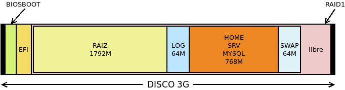
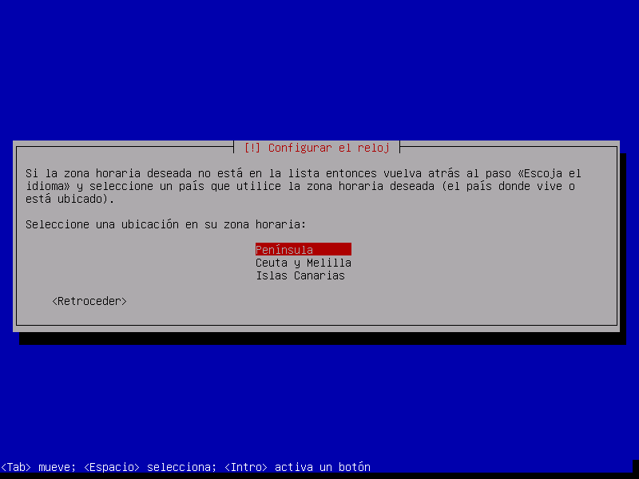
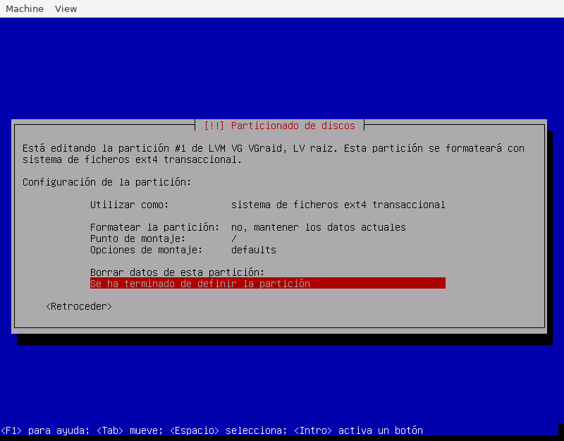

5.10. Instalación del servidor¶
Bajo este epígrage veremos cómo:
Protoinstalar el servidor sobre el disco de una máquina virtual.
Hacer un particionado adecuado.
Exponer cómo transladar la protoinstalación a la máquina real.
fruto de lo cual conseguiremos un sistema:
Preparado para arrancar con BIOS o UEFI.
Instalado sobre un RAID1 para mejorar la seguridad y disponibilidad de la información.
Que usa aprovisionamiento fino para los sistemas de archivos dedicados a los datos.
Con posibilidad de crear instantáneas del sistema de archivos raíz para poder revertir cambios inconvenientes.
Con una imagen virtual para poder llevar a cabo pruebas con ella, antes de transladarlas al servidor en producción.
5.10.1. Preinstalación¶
Antes de lanzar el instalador debemos planificar cuáles son los sistemas de ficheros apropiados para nuestro servidor, y preparar las particiones, el RAID y los volúmenes lógicos adecuados al plan.
5.10.1.1. Sistemas de ficheros¶
Es obvio que cada servidor requerirá un esquema diferente más allá de separar
/, /home y dedicar una partición para la memoria de intercambio[1]. A estos tres, nos podría interesar añadir:
/var/logpara tener aparte los registros y que no llenen por completo la partición raíz, si se desmadran por algún motivo./srvpara almacenar los archivos relacionados con los servicios que podamos ofrecer (web, ftp, etc.)/var/lib/mysql, si nuestro servidor almacena bases de datos de MySQL.Cualesquier otras particiones que ayuden en nuestro propósito. Por ejemplo, si el servidor incluye BackupPC, entonces conviene separar
/var/lib/backuppc.
Por tanto, si añadimos dos particiones de arranque para asegurarnos en un particionado GPT el arranque tanto con BIOS como con UEFI[2]:
Punto de montaje |
Nombre |
Tamaño |
Tamaño previo |
|---|---|---|---|
/ |
RAIZ |
5 GiB |
1792 MiB |
/var/log |
LOG |
1 GiB |
64 MiB |
/home |
HOME |
Variable |
768 MiB |
/srv |
SRV |
Variable |
768 MiB |
/var/lib/mysql |
MYSQL |
Variable |
768 MiB |
swap[3] |
SWAP |
2 GiB[4] |
32 MiB |
/boot/efi |
EFI |
100 MiB |
100 MIB |
- |
BIOSBOOT |
1 MiB |
1 MiB |
La columna de tamaño previo indica el tamaño que le daremos a la partición en la máquina virtual y la de tamaño el que tendrá en el disco real. En este particionado podemos establecer lo siguiente:
Las dos últimas particiones son particiones de disco y quedan fuera de cualquier RAID o grupo de volúmenes.
El resto de sistemas de archivos son volúmenes lógicos de un grupo de volúmenes construido sobre un RAID 1.
/, /var/log y swap son volúmenes cuyo tamaño final podemos establecer a priori a partir de cuál sea el uso que le demos al servidor. Por ejemplo, un servidor sin entorno gráfico difícilmente necesitará más de 5 GiB de espacio de almacenamiento.
Los tres restastes sistemas, sin embargo, tendrán un tamaño variable según los datos que se almacenen en ellos. Podríamos crear tres volúmenes lógicos independendientes, pero podemos aprovechar el concepto de aprovisionamiento fino para que ocupen el mismo espacio y compitan por él. Como, sin embargo, el instalador de Buster no lo soporta, completaremos su creación durante la postinstalación.
Para guardar el esquema de particiones sugerido basta un disco virtual de 3GiB.
5.10.1.2. Particionado¶
Lo llevaremos a cabo antes de hacer la instalación con el fin de tener absoluta libertad. Podríamos, para ello, crear un disco virtual y arrancar la máquina con un sistema Live como Gparted. En vez de eso, haremos las particiones de disco desde el sistema anfitrión para lo cual debemos crear el disco:
$ qemu-img create -f qcow2 servidor.qcw 3G
y hacerlo disponible en /dev/nbd0:
# modprobe nbd max_part=7
# qemu-nbd -c /dev/nbd0 servidor.qcw
Hecho lo cual, ya podemos particionar:
# sgdisk -a 8 -n "0:40:2047" -t "0:0xef02" -c "0:BOOTBIOS" \
-a 2048 -n "0:2048:+100M" -t "0:0xef00" -c "0:EFI" \
-N 0 -t "3:0xfd00" -c "3:RAID" /dev/nbd0
# partx -a /dev/nbd0
Ahora debe crearse el RAID sobre la tercera partición:
# mdadm --create /dev/md0 --metadata=1 --homehost=any --name=0 \
--verbose --level=1 --raid-devices=1 --force /dev/nbd0p3
y sobre él crear un grupo de volúmenes y definir los volúmenes lógicos:
# vgcreate VGraid /dev/md0
# lvcreate -n raiz -L 1792M VGraid
# lvcreate -n log -L 64M VGraid
# lvcreate -n pool -L 768M VGraid
# lvcreate -n swap -C y -L 64M VGraid
De estos volúmenes, el nombrado pool será el volumen que posteriormente convirtamos en el pool de aprovisionamiento, y lo colocamos antes del dedicado a swap para que al situarse éste último al final pueda ampliarse luego su tamaño hasta los 2 GiB manteniendo la contiguidad del espacio. De hecho, forzamos la contiguidad a través de la opción -C.
Además formateamos para asegurarnos de que el tamaño de bloque es de 4KiB:
# mkfs.ext4 -L RAIZ -b4k /dev/VGraid/raiz
# mkfs.ext4 -L LOG -b4k /dev/VGraid/log
Una vez hecho esto, ya podemos comenzar la instalación en una máquina virtual, así que desconectamos:
# vgchange -an VGraid
0 logical volume(s) in volume group "VGraid" now activ
# mdadm --stop /dev/md0
mdadm: stopped /dev/md0
# qemu-nbd -d /dev/nbd0
/dev/nbd0 disconnected
5.10.2. Instalación¶
Debemos hacernos con el disco de instalación de la última estable de debian[5], colocar el disco duro que hemos preparado bajo el epígrafe anterior, y arrancar la máquina virtual. La instalación es bastante sencilla:
Elegimos la instalación con ncurses (¿para qué queremos la gráfica?):
Escogemos la lengua[6], el país y el teclado apropiados:
Escogemos un nombre de servidor:
Y el dominio al que pertenece:
Las siguientes preguntas son referentes a los usuarios del sistema:
Seleccionamos la zona horaria:
Escogemos particionado manual
y llegamos a la parte más delicada de la instalación. La herramientas nos presentará el disco tal cómo lo dejamos preparado:
así que nuestra labor se limita a asociar cada volumen con el punto de montaje apropiado. Por ejemplo, para el volumen dedicado a
/:Obsérvese que no se reformatea la partición, ya que lo hicimos antes de comenzar la instalación. Es importante no hacerlo, ya que de lo contrario en las particiones muy pequeñas, la herramienta escogerá como tamaño de bloque 1KiB, cuando nuestra intención es que sea de 4KiB. Además, como no hemos podido crear aún los volúmenes de aprovisionamiento fino, dejamos pool sin asignar.
Recuerde que hemos creado una partición ESP y que esta suele montarse sobre
/boot/efi, así que no olvide definirlo también:Nota
Esta prevención es necesaria porque estamos llevando a cabo la instalación en un sistema BIOS. Si fuera UEFI, Debian habría tomado directamente la partición como la apropiada para este fin.
Después de aceptar el particionado, pasara un tiempo mientras se instalan en disco los paquetes básicos, después de lo cual se pedirá si deseamos añadir más discos como fuente de paquetes. Nuestra intención es instalar paquetes de internet, así que contestaremos que no:
Y seleccionamos un repositorio de internet. Las réplicas en España, particularmente, nunca me han dado buen resultado:
Aún podremos definir si accedemos a través de un proxy, aunque lo habitual es que no sea así:
Debian lleva a cabo una encuesta para conocer cuáles son los paquetes más usados y, en consecuencia, saber cuáles son más importantes para la comunidad. No está de más decir que sí, aunque podemos contestar que no:
Seleccionamos los grupos de programas que queremos instalar. En este caso, lo más prudente es limitarse a escoger el servidor SSH y las herramientas básicas; e instalar a mano el resto:
Y para finalizar el último paso nos pide indicar dónde se instalará GRUB. Como sólo tenemos un disco (
sda), es en él donde debemos instalarlo:
Hecho todo lo cual, se completa la instalación y es posible arrancar el servidor.
5.10.3. Postinstalación¶
Tras la instalación hay tres tareas que podemos acometer:
5.10.3.1. Personalización¶
Las operaciones de personalización son muy particulares y pueden incluir:
5.10.3.2. Aprovisionamiento fino¶
Como el instalador no soporta aprovisionamiento fino es ahora cuando debemos llevarlo a cabo. Para ello hemos de arrancar el sistema, instalar la herramienta propiada y convertir el volumen lógico que reservamos para esta función en un pool:
# apt install thin-provisioning-tools
# lvconvert --thinpool /dev/VGraid/pool
Hecho lo cual debemos crear los tres volúmenes faltantes:
# lvcreate -T -n home -V 768M VGraid/pool
# lvcreate -T -n srv -V 768M VGraid/pool
# lvcreate -T -n mysql -V 768M VGraid/pool
# mkfs.ext4 -L SRV -b4k /dev/VGraid/srv
# mkfs.ext4 -L HOME -b4k /dev/VGraid/home
# mkfs.ext4 -L MYSQL -b4k /dev/VGraid/mysql
copiar los ficheros personal sobre el nuevo volumen:
# mount /dev/VGraid/home /mnt
# tar -C /home/ -cf - . | tar -C /mnt/ -xvpf -
# umount /mnt
# rm /home/usuario -rf
crear el punto de montaje /var/log/mysql:
# mkdir /var/lib/mysql
añadir los tres puntos de montaje a /etc/fstab:
# cat >> /etc/fstab
/dev/mapper/VGraid-home /home ext4 defaults 0 2
/dev/mapper/VGraid-srv /srv ext4 defaults 0 2
/dev/mapper/VGraid-mysql /var/lib/mysql ext4 defaults 0 2
y, por esta vez, montarlo a mano:
# mount /home
# mount /var/lib/mysql
# mount /srv
5.10.3.3. Generación de la imagen final¶
Aunque la imagen ya está lista, si la queremos usar como plantilla de pruebas es conveniente que la limpiemos para menguar su volumen:
Mucho tamaño se debe a espacio no ocupado, pero escrito por ficheros que se escribieron y borraron durante la instalación.
Pueden vaciarse los registros de
/var/log.Pueden eliminarse los ficheros de bytecode de Python.
Las lista de paquetes en los repositorios ocupan también espacio innecesriamente.
Es posible hacer estas operaciones a mano montando el disco con
qemu-nbd, pero este script creado para
la ocasión, puede ahorrarnos el trabajo:
# mrproper disco.qcw
El script generará en el mismo directorio un nuevo disco disco-light.qcw
con el mínimo tamaño posible.
5.10.3.4. Configurar el servidor¶
Con todo lo anterior ya tenemos un sistema base para trabajar. A partir de aquí tenemos dos posibilidades:
Trasladarlo al servidor.
Llevar a cabo las instalaciones y configuraciones de servicios sobre la imagen y, cuando esté a punto, trasladar el resultado a la máquina real. Obrar de este segundo modo, nos da la ventaja de disponer en el futuro de una plantilla que la configuración exacta de nuestro servidor y, en consecuencia, apta para hacer pruebas antes de pasar los cambios al servidor real. En caso, de optar por esto segundo, no está de manos pasarle mrproper al acabar.
5.10.4. Traslado a servidor real¶
Una vez que se tenga a punto la imagen, puede trasladarse al hardware real. Suponemos que en esta máquina real sí dispondremos de dos discos para el RAID 1.
La idea es utilizar un sistema linux arrancado desde un dispositivo extraíble para volcar la imagen sobre los discos físicos del servidor real, para lo cual es mejor que el disco virtual no esté en formato qcow2 sino que sea una imagen cruda. Por tanto, antes de nada:
# qemu-info convert -cpf qcow2 disco.qcw -O raw disco.raw
# xz -v9 disco.raw
De esta forma, tenemos una imagen comprimida disco.raw.xz. Lo más cómodo
es preparar un USB que disponga de una distribución de arranque y una
partición de datos en la que incluyamos la imagen comprimida. Como distribución
vale cualquiera medianamente moderna, ya que sólo se necesita que sea capaz de
descomprimir el formato xz. Incluso la mínima SliTaZ puede
valernos.
Sea como sea, arrancando con este pincho USB, suponiendo que la partición en
la que hemos copiado disco.raw.xz se haya montado sobre /mnt, y
finalmente que los discos del servidor sean /sda y /sdb:
# xzcat /mnt/disco.raw.xz > /dev/sda
La orden volcará el contenido del disco sobre el primer disco. Esto, sib embargo, no es suficiente, ya que al menos debemos corregir que la copia de la GPT no se encuentre al final del disco:
# sgdisk -e /devsda
5.10.4.1. Constitución del RAID¶
Hay, sin embargo, otro detalle nada baladí. Tenemos un RAID en precario que aún no usa el segundo disco y que, además, sólo aprovecha los primeros 3GiB de disco. Antes de nada, debemos agrandar la partición, pero si lo hacemos ahora es bastante probable que como consecuencia de la acción de copiar al final de disco la GPT, el sistema haya detectado el RAID y el grupo de volúmenes al releer la tabla de particiones. Así que primero vamos a paralos:
# vgchange -an VGraid
# mdadm --stop /dev/md0
Para, después, a las bravas tocar la tabla de particiones:
# sgdisk -d 3 -N 3 -t "3:0xfd00" -c "3:RAID" -p /dev/sda3
esto, es borrarla y redefinir la última partición hasta el final. Como sólo hemos tocado la propia GPT y el contenido de la partición, el RAID seguirá intacto. Tocaría ahora agrandar el RAID, pero sale más a cuenta sincronizar con el segundo disco y sólo después llevar a cabo la ampliación efectiva. Para ello, empezamos por copiar la tabla de particiones:
# sgdisk -R /dev/sdb /dev/sda
# sgdisk -G /dev/sdb
Y ahora, sí, añadir el segundo disco al RAID:
# mdadm --add /dev/md0 /dev/sdb3
# mdadm --grow /dev/md0 --raid-device=2
Al hacerlo, comenzará el proceso de sincronización de los 3GiB, cuyo progreso podemos observar:
# watch cat /proc/mdstat
Completada la sincronización (que no debe durar demasiado), podemos colonizar el resto de la partición:
# mdadm --grow /dev/md0 --assume-clean -z max
# pvresize /dev/md0
Y ya el grupo de volumen ocupará todo el disco y, en consecuencia, podremos aplicar los volúmenes lógicos al tamaño que deseemos, empezando eso sí, por el dedicado a swap cuyo espacio debe ser contiguo:
# lvextend -L 2G /dev/VGraid/swap
# mkswap -L SWAP -U $(blkid -t LABEL=SWAP -o value -s UUID) /dev/VGraid/swap
# lvextend -rL 5G /dev/VGraid/raiz
# lvextend -rL 1G /dev/VGraid/log
Opcionalmente podemos reservar 5GiB para futuras instantáneas del sistema raíz[7]:
# lvcreate -s -n raiz_snap -L 5G /dev/VGraid/raiz
y reservar para el pool el espacio restante. Los volúmnes que cohabitan en él, podemos extenderlos hasta el tamaño que estimemos oportuno, sabiendo que posteriomente podremos ampliarlos:
# lvextend -l +100%FREE /dev/VGraid/pool
# lvextend -rL 50G /dev/VGraid/home
# lvextend -rL 100G /dev/VGraid/srv
# lvextend -rL 2G /dev/VGraid/mysql
# lvremove /dev/VGraid/raiz_snap
5.10.4.2. Sincronización del arranque¶
Dado que hemos dejado los arranques fuera del RAID es obvio que, en nuestro caso, sólo el primer disco será arrancable, y que haber partícipe al segundo disco del RAID no ha mejorado este asunto.
Como nuestro objetivo no es hacer un sistema que arranque indistintamente con uno u otro firmware, podemos sincronizar únicamente un arranca: aquel que sea necesario.
5.10.4.2.1. BIOS¶
Si el firmware es BIOS, la sincronización es enormemente sencilla. Basta con instalar GRUB en el disco en el que falte el arranque:
# grub-install /dev/sdb
Cada vez que haya que sustituir un disco, tras el proceso de sincronización se puede instalar GRUB para que el nuevo disco
5.10.4.2.2. UEFI¶
En caso de que hayamos pasado el sistema para que arranque en UEFI, la cosa es
bastante más complicada, ya que si mantenemos las particiones independientes el
fichero /etc/fstab tendrá que indicar cuál de las dos es la partición
asociada al punto de montaje /boot/efi.
Tenemos dos opciones:
Mantener las particiones por separado y utilizar grub-install para escribir en una y otra ESP. Habrá que jugar con la opción --efi-directory.
Hacer un RAID 1 constituido por ambas particiones ESP, que será por su dificultad lo que expongamos.
Partamos de que mantenemos las dos particiones por separado durante el tiempo en
que el sistema arranca con BIOS y que, cuando migramos a UEFI[8], usamos la ESP de /dev/sda para almacenar el arranque.
En esta situación vamos a copiar temporalmente el contenido de la partición:
# mkdir /tmp/EFI
# tar -C /boot/efi/EFI -cf - . | tar -C /tmp/EFI -xvpf -
# umount /boot/efi
hecho lo cual, definimos un segundo RAID 1:
# mdadm --create /dev/md1 --metadata=1.0 --homehost=any --name=1 \
--verbose --level=1 --raid-devices=2 --force /dev/sda2 /dev/sdb2
# mkfs.fat -nEFI -F32 /dev/md1
Obsérvese algo muy importante: se ha usado como versión de los metadatos la
1.0 que se caracteriza por almacenarlos al final, no al principio. La gracia
de esto es que al formatear directamente el dispositivo /dev/md1 en
FAT32, las dispositivos integrantes podrán ser leídos directamente como como
formateados en FAT32 y, en consecuencia, el firmware será capaz de leer
las particiones y arrancar. Debemos modificar la entrada en /etc/fstab:
/dev/md1 /boot/efi vfat defaults 0 2
añadir el nuevo RAID a /etc/mdadm/mdadm.conf:
# mdadm --examine --scan | grep any:1 >> /etc/mdadm/mdadm.conf
y, por último, restituir los datos al RAID:
# mount /boot/efi
# mv /tmp/EFI /boot/efi
Además, hacemos que funcione la entrada para el dispositivo de disco:
# grub-install --no-nvram --force-extra-removable /dev/sda
donde debemos añadir la opción --no-nvram para que GRUB no intente fallidamente añadir una entrada con efibootmgr. Si nuestro UEFI añade entradas automáticas para ambos discos, estas entradas funcionarán sin problema.
Advertencia
La solución tiene el problema de que el firmware trata con los dispositivos miembros, no con el RAID en sí. En consecuencia, si éste realiza alguna operación de escritura, la hará sobre uno de los miembros y al montarse el RAID, éste fallará porque detectará que los miembros no están sincronizados. Un apaño para solucionar esto, lo brinda la entrada de este blog, que reproducimos por si desaparece:
Evitamos que que por mor de
/etc/mdadm/mdadm.confse ensamble automáticamente este RAID, sustituyendo el nombre del dispotivio por <ignore>:ARRAY <ignore> metadata=1.0 UUID=123...Evitamos que se monte automática el RAID sobre
/boot/efitocando la línea adecuada en/etc/fstab:/dev/md1 /boot/efi vfat noauto,defaults 0 2Creamos un nuevo servicio que ensamble el RAID reincronizando los miembros y montándo el resultado sobre
/boot/efi:[Unit] Description=Resync /boot/efi RAID DefaultDependencies=no After=local-fs.target [Service] Type=oneshot ExecStart=/sbin/mdadm --assemble /dev/md1 --uuid=123... --update=resync ExecStart=/bin/mount /boot/efi RemainAfterExit=yes [Install] WantedBy=sysinit.target
Actualizamos la imagen de disco inicial:
# update-initramfs -u
Notas al pie